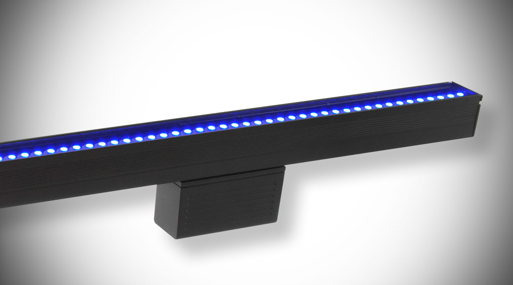
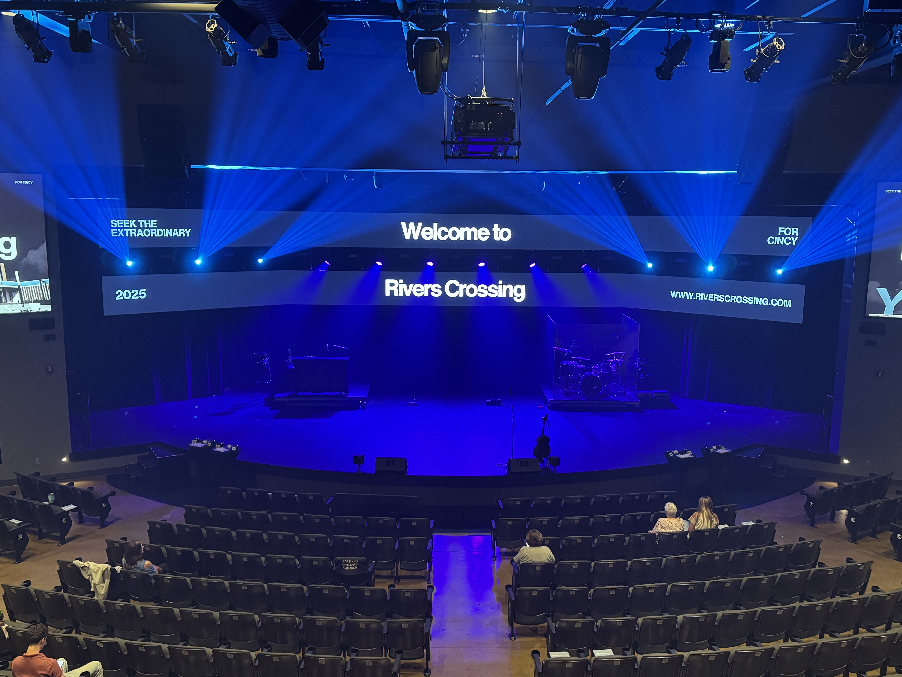

Phasers & Effects
In grandMA3, a phaser is a dynamic tool used to create movement, color chases, and automated repeating effects.
Fly-Outs & Circles
Fly-Out: Fast movements from center to audience, creating energy. Typically a one-shot movement effect.
Circles: Continuous circular motion using Sine/Cosine waves for a clean, predictable flow.
Movement & Dimmer
Figure 8s: Dynamic looping motion created via X/Y phase offsets. Ideal for mid-tempo flow.
Dimus: Rhythmic brightness control (pulsing, strobing) using Speed Masters for precise timing.


Gobo Control
Gobos project patterns and textures. In grandMA3, these are controlled digitally via attribute encoders.
Core Attributes
- Selection: Choose the active pattern from the wheel.
- Rotation: Continuous spinning of the disc.
- Indexing: Locking the pattern at a specific static angle.
Advanced Texture
- Gobo Shake: Adds a vibration or shimmer to the light.
- Gobo Morph: Transitions between two gobo wheels.
Note:
These controls are located within the fixture's Beam attribute encoder pages.
 Pattern Selection
Pattern Selection
 Visual Indexing
Visual Indexing